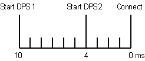

PSLV, PSLV? - (Power Supply LeVel)
The PSLV (Power Supply LeVel) command allows you to make DPS settings for channels previously defined by the DFPS command. The PSLV? query returns the existing settings.
If this command is applied to the primary DPS set, the settings specified with this command will be activated on the hardware immediately.
With this command you configure setups of those sites that have the setup focus: For more information, see also: PSFC, PSFC?.
With this command you can retrieve site specific information (only one site can be in focus at a time). For the site in focus, SmarTest displays results in the Testflow Editor and in the result tools. Also, any firmware queries report setup and results for the site currently in focus only.
PSLV
PSLV {dps_No|dps_set_id}, [voltage], [source_current], [sink_current,] [impedance], [setup_time], {(pinlist)}
PSLV?
PSLV? {dps_No|dps_set_id}, {(pinlist)}
returns:
PSLV {dps_No|dps_set_id}, [voltage], [source_current], [sink_current,] [impedance], [setup_time], {(pinlist)}
Parameters
|
dps_No |
Needed for non-equation-based setup. |
|
|
dps_No |
The identification number of the DPS set which you want to modify. The number must not exceed the maximum number allowed (as defined by the DSCP (Define System Control Parameter) command. |
|
|
ALL |
Modifies all the existing fixed DPS sets. |
|
|
PRM |
Modifies the primary DPS set. |
|
|
ACT |
(Only for PSLV?) Displays the settings of the actual enabled DPS set. |
|
|
dps_set_id |
Needed for equation-based setup. This parameter is derived as follows:
|
|
|
voltage |
The optional parameter voltage defines the output voltage (in V) of the DPS. Applicable value depends on the DPS type. |
|
|
source_current |
The optional parameter defines the source current limit (ilimit_source) in [A]. The applicable value depends on the DPS type. The parameter defines the source and the sink current limit if both values are equal. The parameter defines only the source current limit if the sink_current parameter is used. |
|
| sink_current |
The extra parameter defines the sink current limit (ilimit_sink) in [A]. The parameter is required only if the source and sink current limits are set to different values. This parameter defines then the sink current limit while the source current limit is defined by the above source_current parameter. The parameter is not required if the current limits are programmed symmetrically to the same (absolute) value. Both, the source and the sink value are then defined by the source_current parameter. The query answer shows the sink_current parameter only if the programmed sink current limit is not symmetrical to the source current limit. |
|
|
impedance |
The optional parameter sets the DPS output impedance. You can select:
Note that relay switching is slower than with HIZ.
|
|
|
setup_time |
The optional parameter is an integer which specifies the settling time (in ms) of the DPS. All DPS's are synchronized so that they finish their settling periods at the same point in time. This is the point when the system is switched to the connect state. If there are, for example, two DPS's, one with a settling time of 10 ms, and the other with a settling time of 4 ms, then the second DPS will be started 6 ms after the first:  The range is from -2147483647 up to 2147483646 ms. The default value is 0.
Note setup_time has a resolution
of ms (floating point values are rounded to nearest integer). |
|
|
pinlist |
pinlist must contain the names of pins previously defined by the DFPS command. If more than one pin is specified, the names must be separated by commas. The character @ can be used to set the levels for all DPS pins. |
|
Application
Level Setup, see Level Setup Commands.
Errors
An error is generated if:
- The DPS set number is out of range.
- The programmed voltage is out of range.
- The programmed current is out of range.
- A communication error with the DPS occurs.
- The programmed voltage reaches the overvoltage limit.
Example
PSLV 1,5.2,0.5,HIZ,15,(Vee)
This example sets the following parameters for device pin Vee:
- DPS set 1
- A voltage of 5.2 V
- A current limit of 0.5 A
- Minimum current limit when the test system is disconnected
- A setup time of 15 ms
Functional changes
- Introduced before SmarTest 6.3.2
- SmarTest 6.5.3: Excluding dependency with PSSR command.
- SmarTest 7.1.3: Additional impedance modes: LOZ_HIZ and LOZ_HIZ_R
- SmarTest 7.2.0: New parameter: sink_current